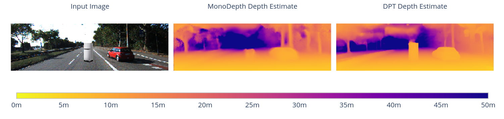

How Do Vision Transformers See Depth in Single Images?
May 5, 2023
ICLR Workshop on Scene Representations
For Autonomous Driving
Peter Mortimer & Hans-Joachim Wünsche
Research Insight
- Reproduce the experiments from van Dijk and de Croon's analysis [1] for the original MonoDepth [2] and for novel transformer-based approaches in Monocular Depth Estimation.
- Present results in an online format for interactive data visualization.
[1]: Tom van Dijk and Guido de Croon. How Do Neural Networks See Depth in Single Images? International Conference on Computer Vision (ICCV), 2019.
[2]: Clément Godard, Oisin Mac Aodha and Gabriel J. Brostow. Unsupervised Monocular Depth Estimation with Left-Right Consistency. IEEE/CVF Conference on Computer Vision and Pattern Recognition (CVPR), 2017.
Motivation
How do neural networks see depth in single images?
- Van Dijk and de Croon's original work analyzed MonoDepth's performance in estimating depth from a single input image.
- This involved generating synthetic images from the KITTI [1] dataset to test specific visual cues that relate to depth estimation.
- The experiments covered aspects related to detecting obstacles and the robustness to changes in camera pose
MonoDepth's detection performance is evaluated for obstacles placed at different distances.
The KITTI images are cropped to emulate a minimal change in camera pitch by the shift of the horizon line.
[1]: Andreas Geiger and Philip Lenz and Raquel Urtasun. Are we ready for Autonomous Driving? The KITTI Vision Benchmark Suite. IEEE/CVF Conference on Computer Vision and Pattern Recognition (CVPR), 2012.
DPT Architecture
DPT-Hybrid [1] applies a ResNet-50 feature extractor and 4 transformer stages on the embedded 16x16 pixel image patches known as tokens. The tokens are reassembled to image-like features at 4 different resolutions and refined to a dense depth prediction.
[1]: René Ranftl, Alexey Bochkovskiy, Vladlen Koltun. Vision Transformers for Dense Prediction. International Conference on Computer Vision (ICCV), 2021.
Experiments
Position vs. Apparent Size
Obstacle Recognition
Experiment No. 1
Position vs. Apparent Size
Position
\[\begin{aligned} Z_{obj} = \frac{f}{\color{red}{y}} Y \end{aligned} \]Human Intuition:
"Looking downward we usually see things close to us, whereas looking upward we usually see things that are far away." [1]
Apparent Size
\[\begin{aligned} Z_{obj} = \frac{f}{\color{red}{h}} H \end{aligned} \]Human Intuition:
"If an observer is certain about an object’s size, its retina image size can reveal its distance." [1]
[1]: E. Brenner and J. B. Smeets. Depth Perception. In Stevens’ Handbook of Experimental Psychology and Cognitive Neuroscience, Depth Perception, pages 385-414. John Wiley & Sons, New York, 4th edition, 2018.
Synthetic data in KITTI
Van Dijk and De Croon generated 1862 obstacle-scene pairs from the KITTI dataset with 3 types of visual effects:
Position and Scale: here we change the ground contact point and the scale of the object when increasing the relative distance.

Position Only: here we only change the ground contact point and keep the original scale of the object.

Scale Only: here we keep the original ground contact point fixed and change the scale of the object.
- DPT accurately predicts depth at farther distances. A combination of position and the apparent size of the object lead to an accurate depth estimate.
- MonoDepth relied more heavily on the object's position for its depth estimate.
- The apparent size of the object is not a depth cue for DPT and MonoDepth.
Experiment No. 2
Obstacle Recognition
Shadow as Visual Cue
Synthetic scene generated in KITTI.
Here and obstacle without a cast shadow
is placed in the center.
Synthetic scene generated in KITTI.
Here and obstacle with a cast shadow
is placed in the center.
Human Intuition: "An object’s shadow can give an indication of its distance from a surface: A shadow close to the object suggests that the object is close to the surface, whereas a larger separation suggests a larger distance from the surface." [1]
[1]: E. Brenner and J. B. Smeets. Depth Perception. In Stevens’ Handbook of Experimental Psychology and Cognitive Neuroscience, Depth Perception, pages 385-414. John Wiley & Sons, New York, 4th edition, 2018.
MonoDepth and Shadows
MonoDepth detects a larger part of the object, when the cast shadow is added.
MonoDepth and DPT in Comparison
DPT can detect the obstacle regardless if the cast shadow is added as visual cue.
Conclusion
- DPT still uses the ground contact point as an important visual cue for the depth estimation of obstacles, but is less reliant on it as the original MonoDepth was.
- DPT is able to detect unusual objects (e.g. fridge) as obstacles in the scene even if the drop shadow as visual cue is absent. MonoDepth heavily relies on the dark border on the ground surface for obstacle detection.
- One caveat: DPT was trained on a larger meta-dataset called MIX 6 [1] before being fine-tuned on the KITTI dataset.
[1]: René Ranftl, Katrin Lasinger, David Hafner, Konrad Schindler, Vladlen Koltun. Towards Robust Monocular Depth Estimation: Mixing Datasets for Zero-Shot Cross-Dataset Transfer. IEEE Transactions on Pattern Analysis and Machine Intelligence (PAMI), 2019.
Thank You for Your Attention!
The blog post is available at:
sr4ad-vit-mde.github.io/blog/2023/visual-cues-monocular-depth-estimation

The full interactive blog post.